Python – Creating a VPS (Virtual Private Server) with Digital Ocean for Hosting Datasette¶
Setup VPS (Digital Ocean Droplet) + Ubuntu + Apache + Environment for Datasette Recipe¶
Below is a fairly detailed guide on how to host a Datasette instance on an inexpensive–$5 per month–Digital Ocean VPS.
The basic, overall guideline is this:
Setup and Configure the Server–in this case, it’s a VPS (Virtual Private Server) provided by the cloud computing platform, Digital Ocean.
Install and Configure the Software From Package Managers (apt, and pip)–Apache, Python (including pip, Datasette, etc), python3-venv, Let’s Encrypt Certbot, UFW (firewall), non-root-user
Finish / tweak configurations for Datasette, download / create database, and test configurations
Setup and Configure the Server¶
Here are the steps involved in creating the Digital Ocean VPS (Virtual Private Server or “Droplet”)
Note: You of course don’t need to use Digital Ocean–there are many options for hosting, but I’ve found this platform to be inexpensive, reliable, and well-supported.
Here is a general outline for configuring the Droplet:
Create or login to a digital ocean account
Click on “Create” …
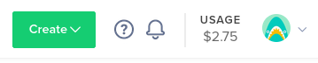
and then select “Droplets” …
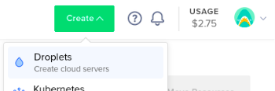I’m going to select Ubuntu 20.04 LTS, but other Linux Distributions may work just as well. 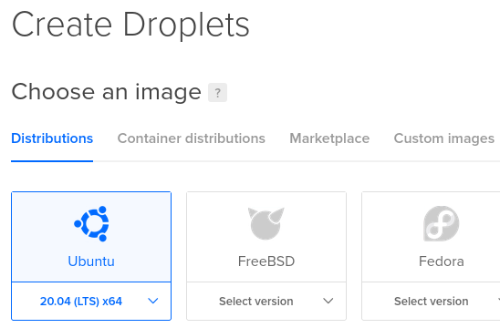
… and then for the plan, “Basic / Shared CPU” and then for CPU options, select “$5 /mo” 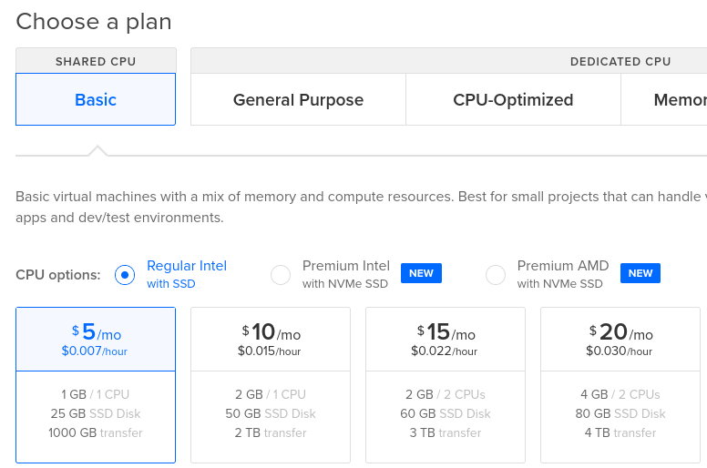Follow the instructions for adding an SSH key that the VPS will use (this is essential for secure access to the VPS) 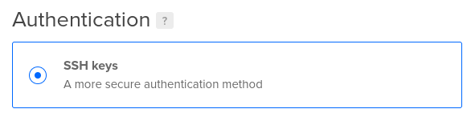
Select “1 Droplet” and pick your hostname (I’m naming this one “collection-analysis”) 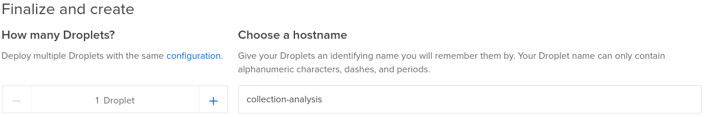
After your server is fully setup, you should have something that looks like this. You can now SSH into your new VPS! 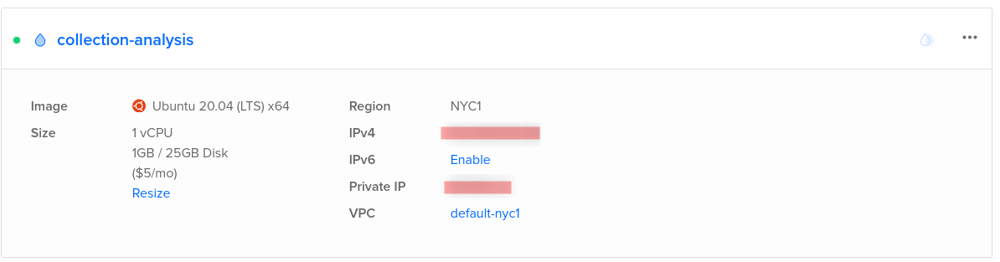
Configure DNS¶
To further setup your server, you can configure your DNS to point to the IP Address of your new server. I’m using Hover.com and their DNS tools. Digital Ocean has some of these tools as well if you decide to use their DNS service. Basically, you’ll want to create an “Address Record” (A Record) to resolve to the IP that Digital Ocean has assigned to your newly created Droplet: 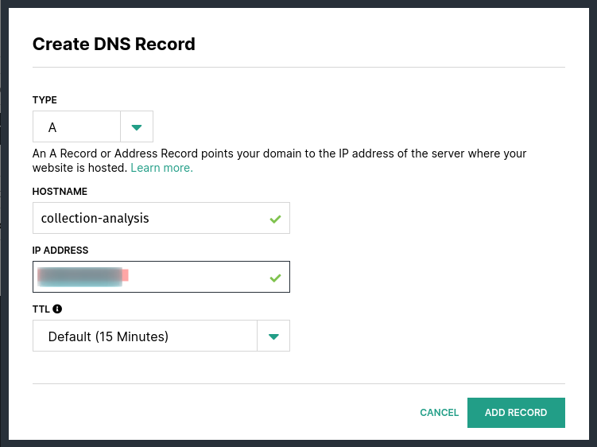
Install and Configure the Software From Package Managers¶
To setup this Droplet to host Datasette, we’re going to be running a minimal Python environment (for Datasette) and configuring Apache (to act as the proxy server–behind which Datasette will run). Also, we’ll be configuring the firewall, and adding a non-privileged user that will run the Datasette application itself
SSH to the newly created VPS, and use the following command to update the server:
sudo apt-get update ; sudo apt-get dist-upgrade --yes
Make sure that the current versions of python and pip are available and installed:
sudo apt-get install python3 python3-pip python3-venv
Install and setup the Apache2 server–and we’ll also go ahead and install the two required Apache modules to enable the reverse proxy:
sudo apt-get install apache2
sudo a2enmod proxy
sudo a2enmod proxy_http
If you’ve setup your DNS and want to test, you should be able to load the test page at this point 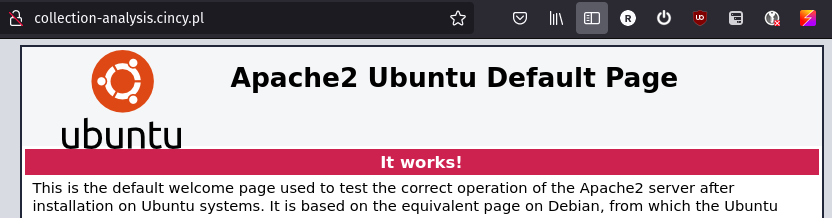
Now is a good time to configure Let’s Encrypt for the site to enable TLS for secure connections via the browser. There are more detailed steps available via this community article on the Digital Ocean site: https://www.digitalocean.com/community/tutorials/how-to-secure-apache-with-let-s-encrypt-on-ubuntu-20-04
Install the Certbot–this provides us with a free tool that automates the process of minting new certificates installing them, and then refreshing them when needed:
sudo apt install certbot python3-certbot-apache
Before running `certbot`, edit the files and add the DNS name you’ve picked for your site (in this example, it’s collection-analysis.cincy.pl ) to the `ServerName` directive in the <VirtualHost> block for your default Apache server configuration–located at /etc/apache2/sites-available/default-ssl.conf
sudo nano /etc/apache2/sites-available/default-ssl.conf
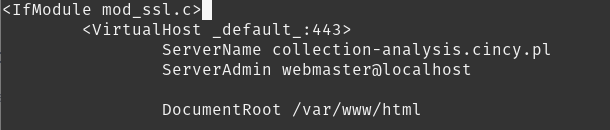
Use CertBot to get generate and install a new certificate for Apache (follow the steps, including adding your email–You’ll be notified if there are any issues in re-issuing the certificates):
sudo certbot --apache
Certbot should have picked up on the server name from the Apache configurations from above and asked you a series of basic questions before generating your certificate. As a result, you should now have a valid certificate installed for Apache!
You can re-check the site, and you should be re-directed to the HTTS version of the site (if you selected that option from the prompts in the previous step)
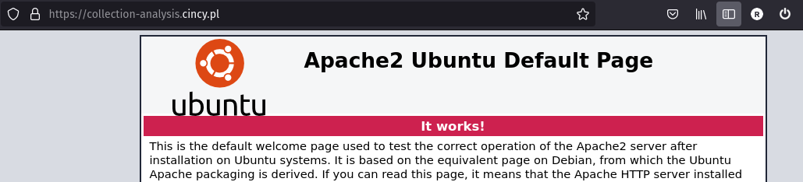
Next, you’ll want to finish configuring Apache to act as the reverse proxy for the running Datasette process (Datasette is designed to run on localhost, so that’s why we’re using Apache to act as a reverse proxy)
If you followed the steps to this point, you should now have a file at this path (Certbot created this as the new default configuration for the server, and now has additional information regarding the certificate):
/etc/apache2/sites-enabled/000-default-le-ssl.conf
Edit this file:
nano /etc/apache2/sites-enabled/000-default-le-ssl.conf
.. add the following to the file 000-default-le-ssl.conf in the <VirtualHost *:443> block to meet your needs (we’ll later configure Datasette to use the /home/ path, and 8010 port being referenced by the configuration here in virtual host configuration block:
ProxyPass /home/ http://127.0.0.1:8010/home/
ProxyPreserveHost On
Firewall Configuration¶
To setup a basic firewall, a non-root user, and configure the rest of the environment under which Datasette will run: Add a user (I’m just picking my own name here) and follow the prompts.
sudo ufw allow OpenSSH
# Apache Full: This profile opens both port 80 (normal, unencrypted web traffic) and port 443 (TLS/SSL encrypted traffic)
sudo ufw allow "Apache Full"
Next, enable the firewall and check the status:
sudo ufw enable
sudo ufw status verbose
The firewall should indicate that it’s allowing SSH connections, as well as Apache (port 80, and 443)
Add the Non-Privileged User Account¶
This account will actually run Datasette itself. It should own all of the Datasette software, configuration files, and SQLite database files.
Add the user:
sudo adduser ray
Add the user to the SUDOers group (if you wish–it’s not required, in fact, you may not want to, but just in case you do, here’s how):
sudo usermod -aG sudo ray
Now, we can restart our server, and ensure that everything comes back the way we intend.
sudo shutdown -r now
Once the server restarts you can test to see if the test web page is loading, and that you can log back in and test that Apache has restarted as well.
Install and Configure Datasette¶
After that, log back in (using your ssh key) and then change to the non-root user you created above (my usename is ray in the example). Make sure these steps are being done by the non-privileged user.
Switch to the user created previously with the su command
su ray
change to the home directory for the user:
cd ~/
Once you’re thenon-privileged user, you can now configure the Python virtual environment, and install a (for now) very minimal configuration of Datasette:
Make the folder where our app files will reside:
mkdir -p collection-analysis-app
cd collection-analysis-app
Install the Python virtual environment (into the ~/collection-analysis-app/venv/ folder), activate it, and then upgrade pip:
python3 -m venv venv
source venv/bin/activate
pip install -U pip
Install Datasette, and try starting it!:
pip install -U datasette
datasette
You should see something similar to this: 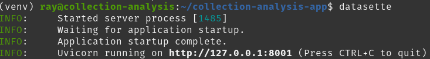
Press Ctrl + C to end the process, and return the the prompt.
To run Datasette, you’ll of course want a SQLite database the databases being deployed in the example are called collection-2021-01-04.db, and collection-2020-01-06.db–they have been generated previously via ILS snapshot data.
Additional Datasette configurations are shown below.
The metadata.yaml file sets a few extra pieces of metadata concerning Datasette (this file can also be assembled using JSON–in fact, that may be easier to assemble of this file piece via a script for example–more on that later)
metadata.yaml example:
title: |-
Cincinnati & Hamilton County Public Library: Collection Analysis DataSet
description_html: |-
This dataset reprsents the state of the physical collection for the Cincinnati & Hamilton County Public Library
for specific dates--as indicated by the datestamp on each database represented below.<br />
<p>Documentation can be found by following the the "Data source" link
# <a href="https://ilsweb.cincinnatilibrary.org/collection-analysis-docs/">https://ilsweb.cincinnatilibrary.org/collection-analysis-docs/</a>
# data source: https://github.com/plch/collection-analysis
source_url: https://ilsweb.cincinnatilibrary.org/collection-analysis-docs/
# license_url: |-
# https://TODO/
extra_css_urls: [/static/my.css]
Starting Datasette seems to be easiest via passing it command line options. Here’s a sample startup script that tells Datasette to host two database files(in immutable mode), along with a number of other configurations:
start_datasette.sh example bash script file:
#!/bin/bash
venv/bin/datasette \
--metadata=metadata.yaml \
-i collection-2021-01-04.db \
--inspect-file=collection-2021-01-04.json \
-i collection-2020-01-06.db \
--inspect-file=collection-2020-01-06.json \
--crossdb \
--setting hash_urls 1 \
--setting default_cache_ttl_hashed 31536000 \
--setting force_https_urls true \
--setting default_page_size 100 \
--setting sql_time_limit_ms 30000 \
--setting max_returned_rows 1000 \
--setting allow_facet on \
--setting allow_facet true \
--setting suggest_facets off \
--setting facet_time_limit_ms 15000 \
--setting num_sql_threads 20 \
--setting cache_size_kb 5000 \
--setting base_url /home/ \
--static static:static/ \
--port 8010
Datasette will use also recognize custom CSS (read from the directory that’s configured with the static parameter value above). Below is a sample CSS.
static/my.css example file:
header {
/*if you want to use a logo, include a path to the URL below*/
background-image: url('/img/logo.png');
background-size: 200px;
background-repeat: no-repeat;
min-height: 200px;
background-color: darkgray;
background-position: bottom left;
background-position-x: 15px;
background-position-y: 55px;
}
footer {
background-color: #0C2340;
}
See the Datasette Documentation section “Deploying Datasette” more details (the section “Running Datasette using systemd”, is especially helpful for restarting Datasette along with the server).
https://docs.datasette.io/en/stable/deploying.html
Finally, it may be a good idea to replace the file that Apache serves as the root of the web site with something more useful than the test file Apache and Ubuntu provides. Below is an example:
<!doctype html>
<html lang="en">
<head>
<meta charset="utf-8">
<meta name="description" content="Cincinnati & Hamilton County Public Library">
<meta name="keywords" content="Cincinnati & Hamilton County Public Library, CHPL, collection analysis, collection-analysis, data, collection data">
<title>Cincinnati & Hamilton County Public Library: Collection Analysis</title>
</head>
<body>
<a href="/home/">https://collection-analysis.cincy.pl/home/</a>
</body>
</html>